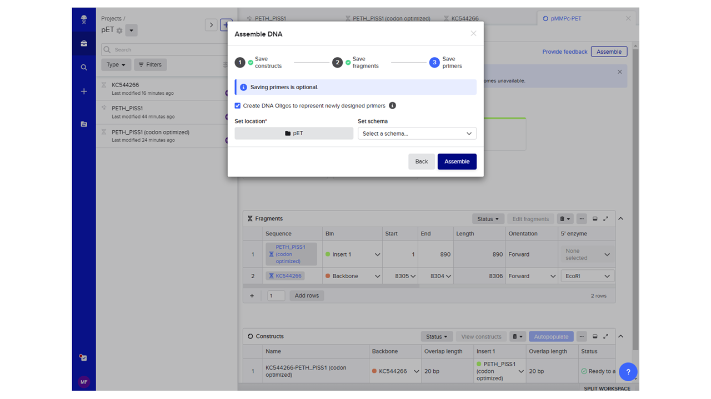

2 PET hydrolase homolog cloning
2.1 Cloning PET hydrolase homologs for heterologous expression in Pseudomonas (Gibson assembly)
In this example we will clone the pET hydrolase from Ideonella sakaiensis into an expression vector (pMMPc) with a strong constitutive promoter for expression in Pseudomonas putida, using Gibson assembly.
2.1.1 Rationale for design choices
Strain choice: Pseudomonas putida is tolerant to solvents, has a robust metabolism and capacity to withstand stresses, and has been used as a chassis organism for industrial biotechnology purposes previously, making it an ideal choice for our PET hydrolase expression system. (c.f. Weimer et al 2020 - https://doi.org/10.1007/s00253-020-10811-9)
Vector choice: Need a plasmid that will replicate in Pseudomonas, with a strong constitutive promoter. Xu et al (2013) created some appropriate vectors, c.f. doi: 10.1128/AEM.03746-12 - we will choose pMMPc (Genbank accession KC544266).
Choice of PET hydrolase: Ideonella sakaiensis has been shown to degrade PET (and can use it as a sole carbon/energy source) doi:10.1126/science.aad6359. We will begin by cloning the well-characterized PET hydrolase from this organism (further optimisation of the hydrolase properties using gene engineering, or exploration of potentially more active/useful homologs may be necessary in the future).
2.1.2 Obtaining the sequence for the PET hydrolase
- Search the UniProt database for “PET hydrolase” (Figure 2.1).
- Click on the search result that you want (in our case, the PET hydrolase from Ideonella sakaiensis/Piscinibacter sakaiensis). This should take you to the page for this protein, with information about its function, etc (Figure 2.2).
- The uniprot accession # for this PET hydrolase is A0A0K8P6T7, which you will need to import the data into Benchling.
In Benchling, you may wish to start a new project (You can do this by clicking on the + icon in the left-hand toolbar, selecting “Project”, and then giving your new project an informative name and description, then clicking “Create project”.)
To import the sequence of the PET hydrolase, click on the + icon, then click AA sequence > Import AA sequence (Figure 2.3)
Click “Import from database”, specify the Accession number (A0A0K8P6T7), Database (UniProt), and Project folder (the folder you just created), then click “Import” (Figure 2.4).
You should then be able to open the imported sequence and observe the amino acid sequence and its features (Figure 2.5).
- You will now need to create a reverse translation of the amino acid sequence to derive the coding sequence necessary for its production.
Select the entire sequence, right click on it, and then then click on “Back translate”.
Specify the options to optimize your back translation: you wish to codon optimize for expression in Pseudomonas putida, and you should add EcoRI as a cut site to avoid (we will be using this site to cut the plasmid for our Gibson assembly reaction.) (Figure 2.6)
Click “Preview optimization” when you are happy with the settings, and then “Save as new sequence”, making sure to save it in the correct Project folder.
- Quality check and modify the sequence as necessary:
A. Select the entirety of the sequence, then click Create > Translation > Forward to examine the translation of your new nucleotide sequence (Figure 2.7).
In this case, note that while there is a start codon present, there is no stop codon - we need to add one.
Right click at the end of the sequence, then select “Insert bases” and add a stop codon (any of the 3 stop codons is fine).
B. You may also wish to add an RBS at the beginning of the sequence (it doesn’t look like there is one present in the vector that we’re using). You can do this using the same method (right click, “Insert bases”, add the desired bases. You could use for example RBS 33 from Aparicio et al 2020, which has been shown to give high expression in P. putida (https://doi.org/10.1016/j.isci.2020.100946) - TAAGGAGGTAAAAACATATG (RBS underlined, start in bold))
C. You can double-check that this sequence is correct by confirming (e.g., using BLASTx) that it matches the I. sakaiensis PET hydrolase protein.
This is the sequence that you would then have synthesized (e.g., by GenScript or another DNA synthesis company) for use in your Gibson assembly reaction.
2.1.3 Obtaining the sequence for the plasmid
The NCBI accession number for the plasmid we wish to use is KC544266. You can import this into Benchling by clicking the + icon, then clicking DNA/RNA sequence > Import DNA RNA sequences.
In the pop-up window, click “Import from database” and paste or type the accession number into the “Sequence” box, then click “Search”, and then “Import” (Figure 2.11).
This should give you the plasmid sequence for the plasmid (Figure 2.12). Note the constitutive promoter (Pc) that we want to use for our cloning project. There is a multiple cloning site (MCS) just downstream of it, which contains EcoRI, BclI, AflIII etc. sites … we have chosen above to use the EcoRI site (but note that we could have chosen any of the sites in the MCS).
You can confirm the presence of the EcoRI site manually as well (click on the scissors icon in the right-hand menu and then search for “EcoRI” (Figure 2.13).
2.1.4 In silico design of your Gibson Assembly
- Click on “Assembly” in the bottom right hand corner of your screen > “Assembly Wizard”, and then in the pop-up window Pick Assembly Strategy, select “Gibson” (Figure 2.14).
This should bring up a message encouraging you to try the new combinatorial assembly tool - click that link.
- In the pop-up menu, add the name of your plasmid that you are aiming to create (Tip: choose something informative, e.g. pMMPc-PET), and be sure to specify the correct project folder.
Check the other specifications: you are assembling two fragments, to create a circular construct, and you will be producing fragments by “Digest with restriction enzyme”. The defualts for min/max length and min Tm of your binding regions are fine.
When you are happy with the specifications, click “Save” (Figure 2.15)
You should now get an assembly tool that allows you to specify the fragments you will use (Figure 2.16).
For BIN 1 (Backbone), click the + symbol > Open sequences > KC544266 (Figure 2.17)
Specify the 5’ enzyme and 3’ enzyme you will use (EcoRI) and the EcoRI site on the map as the Start and End sites (by clicking on View: Plasmid map to see the EcoRI site if necessary) (Figure 2.18), then click “Add”.
For BIN 2 (Insert 1), change the method to “Add new overlaps using PCR” and then click the + sign to add your fragment > Open sequences > the name of your codon optimized sequence (Figure 2.19).
This should bring up your correct fragment to insert (Figure 2.20). Click “add”.
Click “Autopopulate” in the “Constructs” box (Figure 2.21), and then “Assemble” in the top right hand corner”.
Work through the Assemble DNA menu, specifying the folder where you would like to save your constructs, fragments, and primers (?fig-pet22).
 Examine your final construct (Figure 2.22) to verify the construct has placed your PET hydrolase gene in the correct orientation relative to the Pc promoter, and to see the sequences of the primers that you would need to order to carry out this Gibson assembly (Figure 2.23).